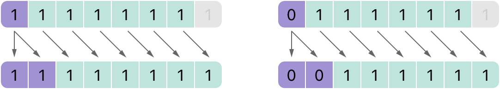

Advanced Operators¶ 先進の演算子¶
In addition to the operators described in Basic Operators, Swift provides several advanced operators that perform more complex value manipulation. These include all of the bitwise and bit shifting operators you will be familiar with from C and Objective-C. 基本の演算子で記述される演算子に加えて、スウィフトはより複雑な値操作を実行するいくつかの先進の演算子を提供します。これらは、あなたがCとObjective-Cからお馴染みの、ビット単位およびビットシフト演算子の全てを含んでいます。
Unlike arithmetic operators in C, arithmetic operators in Swift do not overflow by default. Overflow behavior is trapped and reported as an error. To opt in to overflow behavior, use Swift’s second set of arithmetic operators that overflow by default, such as the overflow addition operator (&+). All of these overflow operators begin with an ampersand (&).
Cでの算術演算子と違って、スウィフトの算術演算子は、初期状態ではオーバフローしません。オーバフロー挙動は、エラーとして捕まえられて報告されます。オーバフロー挙動を選ぶために、初期状態でオーバフローするスウィフトの算術演算子の第二集合を使ってください、例えばオーバフロー加算演算子（&+）など。これらのオーバフロー演算子の全ては、アンパサンド（&）から始まります。
When you define your own structures, classes, and enumerations, it can be useful to provide your own implementations of the standard Swift operators for these custom types. Swift makes it easy to provide tailored implementations of these operators and to determine exactly what their behavior should be for each type you create. あなたがあなた自身の構造体、クラス、そして列挙を定義するとき、標準のスウィフト演算子のあなた自身の実施をそれらあつらえの型のために提供することは役に立つことがありえます。スウィフトは、それら演算子の注文仕立ての実装を提供することについて、そしてそれらの挙動があなたがつくる各型のために正確にどういったものでなければならないかについて決定することを簡単にします。
You’re not limited to the predefined operators. Swift gives you the freedom to define your own custom infix, prefix, postfix, and assignment operators, with custom precedence and associativity values. These operators can be used and adopted in your code like any of the predefined operators, and you can even extend existing types to support the custom operators you define. あなたは、あらかじめ定義された演算子に制限されていません。スウィフトは、あなたに、特注の優先順位と結合性値で、あなた自身のあつらえの接中辞、接頭辞、接尾辞、そして代入演算子を定義する自由を与えます。これらの演算子は、あらかじめ定義された演算子のどれとも同じように、使用されることができ、あなたのコードにおいて取り入れられることができます、そして、あなたはあなたが定義するカスタム演算子をサポートするように既存の型を拡張することさえ可能です。
Bitwise Operators¶ ビット単位演算子¶
Bitwise operators enable you to manipulate the individual raw data bits within a data structure. They are often used in low-level programming, such as graphics programming and device driver creation. Bitwise operators can also be useful when you work with raw data from external sources, such as encoding and decoding data for communication over a custom protocol. ビット単位演算子は、あなたにあるデータ構造内の個々の生のデータ・ビットを操作することを可能にします。それらが、低階層のプログラミング、例えばグラフィックス・プログラミングやデバイスドライバー作成において、しばしば使われます。ビット単位演算子はまた、あなたが外部のソースからの生のデータを扱うとき、役に立つことがありえます、例えば、あつらえのプロトコルを越えて通信するためのデータの符号化や復号など。
Swift supports all of the bitwise operators found in C, as described below. スウィフトは、下記のように、Cで見つけられるビット単位演算子の全てをサポートします。
Bitwise NOT Operator¶ ビット単位の論理否定演算子¶
The bitwise NOT operator (~) inverts all bits in a number:
ビット単位の論理否定演算子（~）は、ある数の中の全てのビットを逆にします：
The bitwise NOT operator is a prefix operator, and appears immediately before the value it operates on, without any white space: ビット単位の論理否定演算子は、接頭辞演算子で、少しの空白なしで、それが作用する値の直前に現れまます：
- let initialBits: UInt8 = 0b00001111
- let invertedBits = ~initialBits // equals 11110000
UInt8 integers have eight bits and can store any value between 0 and 255. This example initializes a UInt8 integer with the binary value 00001111, which has its first four bits set to 0, and its second four bits set to 1. This is equivalent to a decimal value of 15.
UInt8整数は、８ビットを持ち、0と255の間でのどんな値でも格納することができます。この例は、UInt8整数を２進数の値00001111で初期化します、それは、その最初の４つのビットを0に設定して、次の４つのビットを1に設定します。これは、10進の値の15に等しいです。
The bitwise NOT operator is then used to create a new constant called invertedBits, which is equal to initialBits, but with all of the bits inverted. Zeros become ones, and ones become zeros. The value of invertedBits is 11110000, which is equal to an unsigned decimal value of 240.
ビット単位の論理否定演算子は、それからinvertedBitsと呼ばれる新しい定数をつくるために使われます、それは、initialBitsと等しいです、しかし全てのビットは逆にされます。ゼロは１になります、そして１はゼロになります。invertedBitsの値は11110000です、それは、符号なし10進の値の240と等しいです。
Bitwise AND Operator¶ ビット単位の論理積演算子¶
The bitwise AND operator (&) combines the bits of two numbers. It returns a new number whose bits are set to 1 only if the bits were equal to 1 in both input numbers:
ビット単位の論理積演算子（&）は、２つの数のビットを結合します。それはある新しい数を返します、それのビットは両方の入力数においてビットが1と等しかった場合にだけ1に設定されます：
In the example below, the values of firstSixBits and lastSixBits both have four middle bits equal to 1. The bitwise AND operator combines them to make the number 00111100, which is equal to an unsigned decimal value of 60:
下記の例で、firstSixBitsとlastSixBitsの値は、1と等しい４つの中間のビットを両方とも持ちます。ビット単位の論理積演算子は、それらを結合して、数00111100をつくります、それは、符号なしの10進数の60と等しいです：
- let firstSixBits: UInt8 = 0b11111100
- let lastSixBits: UInt8 = 0b00111111
- let middleFourBits = firstSixBits & lastSixBits // equals 00111100
Bitwise OR Operator¶ ビット単位の論理和演算子¶
The bitwise OR operator (|) compares the bits of two numbers. The operator returns a new number whose bits are set to 1 if the bits are equal to 1 in either input number:
ビット単位の論理和演算子（|）は、２つの数のビットを比較します。この演算子は、どちらかの入力数においてビットが1と等しいならばビットが1に設定される、ある新しい数を返します：
In the example below, the values of someBits and moreBits have different bits set to 1. The bitwise OR operator combines them to make the number 11111110, which equals an unsigned decimal of 254:
下記の例で、someBitsとmoreBitsの値は、1に設定される異なるビットを持ちます。ビット単位の論理和演算子は、それらを結合して、数11111110を作ります、それは、符号なしの10進数の254と等しいです：
- let someBits: UInt8 = 0b10110010
- let moreBits: UInt8 = 0b01011110
- let combinedbits = someBits | moreBits // equals 11111110
Bitwise XOR Operator¶ ビット単位の排他的論理和演算子¶
The bitwise XOR operator, or “exclusive OR operator” (^), compares the bits of two numbers. The operator returns a new number whose bits are set to 1 where the input bits are different and are set to 0 where the input bits are the same:
ビット単位の排他的論理和（XOR）演算子、あるいは「排他的論理和演算子」（^）は、２つの数のビットを比較します。この演算子は、入力ビットたちが異なっている所で1に設定され、入力ビットたちが同じである所で0に設定される、ある新しい数を返します：
In the example below, the values of firstBits and otherBits each have a bit set to 1 in a location that the other does not. The bitwise XOR operator sets both of these bits to 1 in its output value. All of the other bits in firstBits and otherBits match and are set to 0 in the output value:
下記の例で、firstBitsとotherBitsそれぞれの値は、他のものがそうでない場所で、ビットを1に設定されます。ビット単位の排他的論理和演算子は、これらのビットの両方ともその出力値において1に設定します。firstBitsとotherBitsでの他の全てのビットは一致していて、出力値において0に設定されます：
- let firstBits: UInt8 = 0b00010100
- let otherBits: UInt8 = 0b00000101
- let outputBits = firstBits ^ otherBits // equals 00010001
Bitwise Left and Right Shift Operators¶ ビット単位の左および右シフト演算子¶
The bitwise left shift operator (<<) and bitwise right shift operator (>>) move all bits in a number to the left or the right by a certain number of places, according to the rules defined below.
ビット単位の左シフト演算子（<<）とビット単位の右シフト演算子（>>）は、下で定義される規則に従ってある数の中の全てのビットを左または右に特定の桁数だけ移動します。（シフト：移す、ずらす）
Bitwise left and right shifts have the effect of multiplying or dividing an integer by a factor of two. Shifting an integer’s bits to the left by one position doubles its value, whereas shifting it to the right by one position halves its value. ビット単位の左または右シフトは、２の因数によって、ある整数を掛けるまたは割る効果を持ちます。整数のビットを位置１つだけ左へ移すことはその値を２倍にします、一方それを位置１つだけ右へ移すことはその値を半分にします。
Shifting Behavior for Unsigned Integers¶ 符号なし整数のためのシフト挙動¶
The bit-shifting behavior for unsigned integers is as follows: 符号なし整数のためのビットシフト挙動は、次の通りです：
- Existing bits are moved to the left or right by the requested number of places. 既存のビットは、左または右へ要請された桁数だけ動かされます。
- Any bits that are moved beyond the bounds of the integer’s storage are discarded. 整数の格納量の境界を越えて動かされるあらゆるビットは、捨てられます。
- Zeros are inserted in the spaces left behind after the original bits are moved to the left or right. 元のビットが左または右へ移動した後に残される空きに、ゼロが差し込まれます。
This approach is known as a logical shift. このやり方は、論理シフトとして知られています。
The illustration below shows the results of 11111111 << 1 (which is 11111111 shifted to the left by 1 place), and 11111111 >> 1 (which is 11111111 shifted to the right by 1 place). Blue numbers are shifted, gray numbers are discarded, and orange zeros are inserted:
下のイラストは、11111111 << 1（それは、1桁だけ左へシフトされる11111111です）、そして11111111 >> 1（それは、1桁だけ右へシフトされる11111111です）の結果を示します。青色の数はシフトされます、灰色の数は捨てられます、そしてオレンジ色のゼロが差し込まれます：
Here’s how bit shifting looks in Swift code: ビットシフトがスウィフトコードにおいてどのように見えるかは、ここにあります：
- let shiftBits: UInt8 = 4 // 00000100 in binary
- shiftBits << 1 // 00001000
- shiftBits << 2 // 00010000
- shiftBits << 5 // 10000000
- shiftBits << 6 // 00000000
- shiftBits >> 2 // 00000001
You can use bit shifting to encode and decode values within other data types: あなたは、他のデータ型内の値を符号化したり復号するために、ビットシフトを使うことができます：
- let pink: UInt32 = 0xCC6699
- let redComponent = (pink & 0xFF0000) >> 16 // redComponent is 0xCC, or 204
- let greenComponent = (pink & 0x00FF00) >> 8 // greenComponent is 0x66, or 102
- let blueComponent = pink & 0x0000FF // blueComponent is 0x99, or 153
This example uses a UInt32 constant called pink to store a Cascading Style Sheets color value for the color pink. The CSS color value #CC6699 is written as 0xCC6699 in Swift’s hexadecimal number representation. This color is then decomposed into its red (CC), green (66), and blue (99) components by the bitwise AND operator (&) and the bitwise right shift operator (>>).
この例は、ピンク色のカスケーディング・スタイル・シートの色値を保存するために、pinkと呼ばれるUInt32定数を使います。CSS色値#CC6699は、スウィフトの16進数表現では0xCC6699のように書かれます。この色はそれから、ビット単位の論理積演算子（&）とビット単位の右シフト演算子（>>）によって、それの赤（CC）、緑（66）、そして青（99）の構成要素に分解されます。
The red component is obtained by performing a bitwise AND between the numbers 0xCC6699 and 0xFF0000. The zeros in 0xFF0000 effectively “mask” the second and third bytes of 0xCC6699, causing the 6699 to be ignored and leaving 0xCC0000 as the result.
赤の構成要素は、数0xCC6699と0xFF0000との間のビット単位の論理積を実行することによって得られます。0xFF0000のゼロは、0xCC6699の２番目と３番目のバイトを効果的に「マスク」します（隠して消します）、そして6699が無視されるようになって、結果として0xCC0000が残ります。
This number is then shifted 16 places to the right (>> 16). Each pair of characters in a hexadecimal number uses 8 bits, so a move 16 places to the right will convert 0xCC0000 into 0x0000CC. This is the same as 0xCC, which has a decimal value of 204.
この数は、それから右に16桁シフトされます（>> 16）。16進数の中の文字の各ペアは８ビットを使うので、右への16桁の移動は0xCC0000を0x0000CCへと変えます。これは0xCCと同じものです、それは、10進の値の204を持ちます。
Similarly, the green component is obtained by performing a bitwise AND between the numbers 0xCC6699 and 0x00FF00, which gives an output value of 0x006600. This output value is then shifted eight places to the right, giving a value of 0x66, which has a decimal value of 102.
同じように、緑の構成要素は数0xCC6699と0x00FF00との間のビット単位の論理積を実行することによって得られます、それは、0x006600の出力値を与えます。この出力値は、それから８桁右にシフトされて、0x66の値を与えます、それは10進の値の102を持ちます。
Finally, the blue component is obtained by performing a bitwise AND between the numbers 0xCC6699 and 0x0000FF, which gives an output value of 0x000099. There’s no need to shift this to the right, as 0x000099 already equals 0x99, which has a decimal value of 153.
最後に、青の構成要素は数0xCC6699と0x0000FFとの間のビット単位の論理積を実行することによって得られます、それは、0x000099の出力値を与えます。0x000099がすでに0x99に等しいので、これを右へシフトする必要はありません、それは10進の値の153を持ちます。
Shifting Behavior for Signed Integers¶ 符号つき整数のためのシフト挙動¶
The shifting behavior is more complex for signed integers than for unsigned integers, because of the way signed integers are represented in binary. (The examples below are based on 8-bit signed integers for simplicity, but the same principles apply for signed integers of any size.) シフト挙動は、符号つき整数では符号なし整数よりももっと複雑です、なぜなら、符号つき整数が２進数において表される方法のためです。（下の例は、単純さのために8ビット符号つき整数に基づきます、しかし同じ原理はあらゆるサイズの符号つき整数に当てはまります）。
Signed integers use their first bit (known as the sign bit) to indicate whether the integer is positive or negative. A sign bit of 0 means positive, and a sign bit of 1 means negative.
符号つき整数は、それらの最初のビット（符号ビットとして知られるもの）を使って、その整数が正であるか負であるかを示します。0の符号ビットは正を意味します、そして、1の符号ビットは負であることを意味します。
The remaining bits (known as the value bits) store the actual value. Positive numbers are stored in exactly the same way as for unsigned integers, counting upwards from 0. Here’s how the bits inside an Int8 look for the number 4:
残っているビット（値ビットとして知られるもの）は、実際の値を格納します。正の数は符号なし整数と正確に同じ方法で格納されて、0から上方へ数えます。Int8内のビットが数4に対してどのように見えるかは、ここにあります：
The sign bit is 0 (meaning “positive”), and the seven value bits are just the number 4, written in binary notation.
符号ビットは0です（「正」を意味します）、そして７つの値ビットはちょうど、２進数表記法で書かれる数4です。
Negative numbers, however, are stored differently. They are stored by subtracting their absolute value from 2 to the power of n, where n is the number of value bits. An eight-bit number has seven value bits, so this means 2 to the power of 7, or 128.
負の数は、しかし異なって格納されます。それらは、2のn乗からそれらの絶対値を減ずることによって格納されます、そこで、nは値ビットの数です。８ビットの数は７つの値ビットを持ちますので、これは2の7乗、つまり128を意味します。
Here’s how the bits inside an Int8 look for the number -4:
Int8内のビットが数-4に対してどのように見えるかは、ここにあります：
This time, the sign bit is 1 (meaning “negative”), and the seven value bits have a binary value of 124 (which is 128 - 4):
今度は、符号ビットは1です（「負」を意味します）、そして、７つの値ビットは２進数の値の124を持ちます（それは、128 - 4です）：
This encoding for negative numbers is known as a two’s complement representation. It may seem an unusual way to represent negative numbers, but it has several advantages. この負数のための符号化は、２の補数表現として知られています。それは負数を表す普通でない方法のようかもしれません、しかしそれはいくつかの利点を持ちます。
First, you can add -1 to -4, simply by performing a standard binary addition of all eight bits (including the sign bit), and discarding anything that doesn’t fit in the eight bits once you’re done:
第１に、あなたは-1を-4に加えることが、単純に８つのビット全て（符号ビットを含む）の通常のバイナリの加算を実行して、あなたがそうしたならばその８ビットに収まらない何でも捨てることによって行えます：
Second, the two’s complement representation also lets you shift the bits of negative numbers to the left and right like positive numbers, and still end up doubling them for every shift you make to the left, or halving them for every shift you make to the right. To achieve this, an extra rule is used when signed integers are shifted to the right: When you shift signed integers to the right, apply the same rules as for unsigned integers, but fill any empty bits on the left with the sign bit, rather than with a zero. 第２に、２の補数表現はまた、あなたに負数のビットを左や右に正の数のようにシフトさせます、そして依然としてあなたが左へとするシフトは全てそれを２倍にすることで、またあなたが右へとするシフトは全てそれを半分にすることで終わります。これを達成するために、符号つき整数が右へシフトされるとき、特別な規則が使われます：あなたが符号つき整数を右にシフトする時は、符号なし整数と同じ規則を適用してください、しかし、その左のあらゆる空のビットを、ゼロではなく符号ビットで満たしてください。
This action ensures that signed integers have the same sign after they are shifted to the right, and is known as an arithmetic shift. この動作は、符号つき整数が、それが右へシフトされた後に同じサインを持つことを確実にします、そして算術シフトとして知られています。
Because of the special way that positive and negative numbers are stored, shifting either of them to the right moves them closer to zero. Keeping the sign bit the same during this shift means that negative integers remain negative as their value moves closer to zero. 正および負の数が格納される特別な方法のため、それらのどちらでも右へシフトすることは、それらをゼロの近くに動かします。このシフトの間に符号ビットを同じに保つことは、それの値がゼロの近くに動くとき、負整数が負のままであることを意味します。
Overflow Operators¶ オーバフロー演算子¶
If you try to insert a number into an integer constant or variable that cannot hold that value, by default Swift reports an error rather than allowing an invalid value to be created. This behavior gives extra safety when you work with numbers that are too large or too small. あなたがある数をその値を持つことができない整数の定数や変数の中へ入れようとするならば、初期状態では、スウィフトは無効な値がつくられるようにするのではなく、エラーを報告します。この挙動は、あまりに大きいかあまりに小さい数をあなたが扱うとき、追加の安全を与えます。
For example, the Int16 integer type can hold any signed integer between -32768 and 32767. Trying to set an Int16 constant or variable to a number outside of this range causes an error:
例えば、Int16整数型は、-32768と32767の間のどんな符号つき整数でも持つことができます。Int16定数または変数をこの範囲の外側の数に設定する試みは、エラーを引き起こします：
- var potentialOverflow = Int16.max
- // potentialOverflow equals 32767, which is the maximum value an Int16 can hold（potentialOverflowは32767と等しく、それはInt16が持つことができる最大限の値です）
- potentialOverflow += 1
- // this causes an error（これは、エラーを引き起こします）
Providing error handling when values get too large or too small gives you much more flexibility when coding for boundary value conditions. 値があまりに大きいかあまりに小さくなる時にエラー処理を提供することは、境界値条件のためのコードを書くとき、あなたにずっと多くの柔軟性を与えます。
However, when you specifically want an overflow condition to truncate the number of available bits, you can opt in to this behavior rather than triggering an error. Swift provides three arithmetic overflow operators that opt in to the overflow behavior for integer calculations. These operators all begin with an ampersand (&):
しかし、あなたがに利用できるビットの数を切り詰めるために特にオーバフロー条件を望むとき、あなたはエラーを引き起こすのではなくこの挙動を選ぶことができます。スウィフトは、整数計算のためにオーバフロー挙動を選択する３つの算術オーバフロー演算子を提供します。これらの演算子は、全てアンパサンド（&）で始まります：
- Overflow addition (
&+) オーバフロー加算（&+） - Overflow subtraction (
&-) オーバフロー減算（&-） - Overflow multiplication (
&*) オーバフロー乗算（&*）
Value Overflow¶ 値オーバフロー¶
Numbers can overflow in both the positive and negative direction. 数は正と負の向きの両方においてオーバフローすることができます。
Here’s an example of what happens when an unsigned integer is allowed to overflow in the positive direction, using the overflow addition operator (&+):
ここに、オーバフロー加算演算子（&+）を使用して、正の向きにおいて符号なし整数がオーバフローを許されるとき何が起こるかの例があります：
- var unsignedOverflow = UInt8.max
- // unsignedOverflow equals 255, which is the maximum value a UInt8 can hold（unsignedOverflowは255に等しく、それはUInt８が持つことができる最大限の値です）
- unsignedOverflow = unsignedOverflow &+ 1
- // unsignedOverflow is now equal to 0（unsignedOverflowは、現在0と等しいです）
The variable unsignedOverflow is initialized with the maximum value a UInt8 can hold (255, or 11111111 in binary). It is then incremented by 1 using the overflow addition operator (&+). This pushes its binary representation just over the size that a UInt8 can hold, causing it to overflow beyond its bounds, as shown in the diagram below. The value that remains within the bounds of the UInt8 after the overflow addition is 00000000, or zero.
変数unsignedOverflowは、UInt8が持つことができる最大限の値で初期化されます（255、または２進数での11111111）。それは、それからオーバフロー加算演算子（&+）を使って1だけ増やされます。これは、そのバイナリの表現をちょうどUInt8が持つことができる大きさ以上に押し広げて、それを、下の図で示すように、その境界を越えてあふれさせます。オーバフロー加算の後でUInt8の領域内に残る値は、00000000、またはゼロです：
Something similar happens when an unsigned integer is allowed to overflow in the negative direction. Here’s an example using the overflow subtraction operator (&-):
符号なし整数が負の向きにおいてオーバフローを認められるときに同じようなことが起こります。ここにオーバフロー減算演算子（&-）を使った例があります：
- var unsignedOverflow = UInt8.min
- // unsignedOverflow equals 0, which is the minimum value a UInt8 can hold（unsignedOverflowは0と等しく、それはUInt8が持つことができる最小限の値です）
- unsignedOverflow = unsignedOverflow &- 1
- // unsignedOverflow is now equal to 255（unsignedOverflowは、現在255と等しいです）
The minimum value that a UInt8 can hold is zero, or 00000000 in binary. If you subtract 1 from 00000000 using the overflow subtraction operator (&-), the number will overflow and wrap around to 11111111, or 255 in decimal.
UInt8が持つことができる最小限の値は、０、または２進数では00000000です。あなたがオーバフロー減算演算子（&-）を使用して00000000から1を減ずるならば、その数はあふれ出てぐるっと送り込まれて11111111、10進での255になります：
Overflow also occurs for signed integers. All addition and subtraction for signed integers is performed in bitwise fashion, with the sign bit included as part of the numbers being added or subtracted, as described in Bitwise Left and Right Shift Operators. オーバフローはまた、符号つき整数に対しても起こります。符号つき整数に対する全ての加算と減算は、ビット単位の左および右シフト演算子で記述されるように、加算または減算される数の一部として含めらる符号ビットとともに、ビット単位流儀で実行されます。
- var signedOverflow = Int8.min
- // signedOverflow equals -128, which is the minimum value an Int8 can hold（signedOverflowは-128と等しく、それはInt8が持つことができる最小限の値です）
- signedOverflow = signedOverflow &- 1
- // signedOverflow is now equal to 127（signedOverflowは、現在127と等しいです）
The minimum value that an Int8 can hold is -128, or 10000000 in binary. Subtracting 1 from this binary number with the overflow operator gives a binary value of 01111111, which toggles the sign bit and gives positive 127, the maximum positive value that an Int8 can hold.
Int8が持つことができる最小限の数は、-128、または２進数での10000000です。この２進数からオーバフロー演算子を使って1を減ずることは、２進数の01111111を与えます、それは符号ビットを切り替えて正の127、Int8が持つことができる最大限の正の値、を与えます。
For both signed and unsigned integers, overflow in the positive direction wraps around from the maximum valid integer value back to the minimum, and overflow in the negative direction wraps around from the minimum value to the maximum. 符号つきおよび符号なし整数の両方に対して、正の方向でのオーバフローは最大限の有効な整数値から逆に最小限へとぐるっと送り込まれ、負の方向でのオーバフローは最小限の値から最大限へとぐるっと送り込まれます。
Precedence and Associativity¶ 優先順位と結合性¶
Operator precedence gives some operators higher priority than others; these operators are applied first. 演算子優先順位は、ある演算子に他のものよりも高い優先権を与えます；これらの演算子は最初に適用されます。
Operator associativity defines how operators of the same precedence are grouped together—either grouped from the left, or grouped from the right. Think of it as meaning “they associate with the expression to their left,” or “they associate with the expression to their right.” 演算子結合性は、同じ優先順位の演算子がまとめられる方法を定義します ― 左からまとめられるか右からまとめられるかのどちらか。それは「それらは、式をそれらの左と結びつける」あるいは「それらは、式をそれらの右と結びつける」を意味すると考えてください。
It is important to consider each operator’s precedence and associativity when working out the order in which a compound expression will be calculated. For example, operator precedence explains why the following expression equals 17.
複合の式が計算される順番を解決するとき、各演算子の優先順位と結合性を考慮することは、重要です。例えば、演算子優先順位は、なぜ以下の式が17に等しいのかを説明します。
- 2 + 3 % 4 * 5
- // this equals 17（これは17に等しい）
If you read strictly from left to right, you might expect the expression to be calculated as follows: あなたが厳密に左から右に読んだならば、あなたはこの式を以下のように計算されることを期待するでしょう：
2plus3equals52足す3は5に等しい5remainder4equals15割る4の余りは1に等しい1times5equals51掛ける5は5に等しい
However, the actual answer is 17, not 5. Higher-precedence operators are evaluated before lower-precedence ones. In Swift, as in C, the remainder operator (%) and the multiplication operator (*) have a higher precedence than the addition operator (+). As a result, they are both evaluated before the addition is considered.
しかしながら、実際の答えは17です、5ではなく。より高い優先順位の演算子は、より低い優先順位のもの前に評価されます。スウィフトでは、Cでのように、剰余演算子（%）と乗算演算子（*）は、加算演算子（+）より高い優先順位を持ちます。結果として、それらは両方とも、加算が考慮される前に評価されます。
However, remainder and multiplication have the same precedence as each other. To work out the exact evaluation order to use, you also need to consider their associativity. Remainder and multiplication both associate with the expression to their left. Think of this as adding implicit parentheses around these parts of the expression, starting from their left: しかしながら、剰余と乗算は、互いに同じ優先順位を持ちます。使用する的確な評価順序を解き明かすには、あなたはまたそれらの結合性を考慮する必要があります。剰余と乗算は、両方とも式をそれらの左と結びつけます。これを、これらの式部分のまわりに、暗黙の括弧をそれらの左から開始して加えることと考えてみてください：
- 2 + ((3 % 4) * 5)
(3 % 4) is 3, so this is equivalent to:
(3 % 4)は3なので、これは以下に等しいです：
- 2 + (3 * 5)
(3 * 5) is 15, so this is equivalent to:
(3 * 5)は15なので、これは以下に等しいです：
- 2 + 15
This calculation yields the final answer of 17.
この計算は、最終的な答えの17を生みます。
For information about the operators provided by the Swift standard library, including a complete list of the operator precedence groups and associativity settings, see Operator Declarations. スウィフト標準ライブラリによって提供される演算子についての情報として、演算子優先順位と結合性の設定の完全なリストを含めて、さまざまな演算子宣言を見てください。
Note 注意
Swift’s operator precedences and associativity rules are simpler and more predictable than those found in C and Objective-C. However, this means that they are not exactly the same as in C-based languages. Be careful to ensure that operator interactions still behave in the way you intend when porting existing code to Swift. スウィフトの演算子優先順位と結合性規則は、CとObjective-Cで見つけられるそれらより単純でより予測できます。しかし、これはCに基づく言語とそれらが厳密には同じでないことを意味します。既存のコードをスウィフトに移植するとき、依然としてあなたが意図するやり方で演算子相互作用が振る舞うことを確実にするように注意してください。
Operator Methods¶ 演算子メソッド¶
Classes and structures can provide their own implementations of existing operators. This is known as overloading the existing operators. クラスと構造体は、既存の演算子のそれら独自の実装を提供することができます。既存の演算子のオーバーロードとしてこれは知られています。
The example below shows how to implement the arithmetic addition operator (+) for a custom structure. The arithmetic addition operator is a binary operator because it operates on two targets and is said to be infix because it appears in between those two targets.
下の例は、あつらえの構造体のために算術加算演算子（+）を実装する方法を示します。算術加算演算子は、それが２つの目標に作用するので二項演算子です、そして、それがそれらの２つの目標の間に現れるので接中辞と言われます。
The example defines a Vector2D structure for a two-dimensional position vector (x, y), followed by a definition of an operator method to add together instances of the Vector2D structure:
例は、２次元の位置ベクトル(x, y)のためのVector2D構造体を定義します。そして、Vector2D構造体のインスタンスたちを１つに加えるための演算子メソッドの定義が続きます：
- struct Vector2D {
- var x = 0.0, y = 0.0
- }
- extension Vector2D {
- static func + (left: Vector2D, right: Vector2D) -> Vector2D {
- return Vector2D(x: left.x + right.x, y: left.y + right.y)
- }
- }
The operator method is defined as a type method on Vector2D, with a method name that matches the operator to be overloaded (+). Because addition isn’t part of the essential behavior for a vector, the type method is defined in an extension of Vector2D rather than in the main structure declaration of Vector2D. Because the arithmetic addition operator is a binary operator, this operator method takes two input parameters of type Vector2D and returns a single output value, also of type Vector2D.
この演算子メソッドは、Vector2D上で型メソッドとして定義され、オーバーロードされる演算子と一致するメソッド名を持ちます（+）。加算はベクトルの欠くことのできない挙動の部分ではないので、この型メソッドはVector2Dの拡張において定義されます、Vector2Dの主構造定義においてではなく。算術加算演算子は二項演算子なので、この演算子メソッドはVector2D型の２つの入力パラメーターを取り、同じくVector2D型のただ１つの出力値を返します。
In this implementation, the input parameters are named left and right to represent the Vector2D instances that will be on the left side and right side of the + operator. The method returns a new Vector2D instance, whose x and y properties are initialized with the sum of the x and y properties from the two Vector2D instances that are added together.
この実装において、入力パラメータは、leftとrightという名前をつけられ、+演算子の左側と右側にあるVector2Dインスタンスを表します。メソッドは、新しいVector2Dインスタンスを返します、それはxとyプロパティが一緒に加えられる２つのVector2Dインスタンスからのxとyプロパティの合計で初期化されるものです。
The type method can be used as an infix operator between existing Vector2D instances:
この型メソッドは既存のVector2Dインスタンスの間で接中辞演算子として使われることができます：
- let vector = Vector2D(x: 3.0, y: 1.0)
- let anotherVector = Vector2D(x: 2.0, y: 4.0)
- let combinedVector = vector + anotherVector
- // combinedVector is a Vector2D instance with values of (5.0, 5.0)（combinedVectorは(5.0, 5.0)の値をもつVector2Dインスタンスです）
This example adds together the vectors (3.0, 1.0) and (2.0, 4.0) to make the vector (5.0, 5.0), as illustrated below.
この例は、下で図示されるように、ベクトル(3.0, 1.0)と(2.0, 4.0)を加えて一緒にして、ベクトル(5.0, 5.0)を作ります。
Prefix and Postfix Operators¶ 接頭辞と接尾辞演算子¶
The example shown above demonstrates a custom implementation of a binary infix operator. Classes and structures can also provide implementations of the standard unary operators. Unary operators operate on a single target. They are prefix if they precede their target (such as -a) and postfix operators if they follow their target (such as b!).
上で示される例は、二項接中辞演算子のあつらえの実装を示します。クラスと構造体は、また、標準の単項演算子の実施も提供することができます。単項演算子は、１つの目標に作用します。それらは、それがその目標に先行するならば接頭辞（例えば-a）、それがその目標の後に続くならば接尾辞演算子です（例えばb!）。
You implement a prefix or postfix unary operator by writing the prefix or postfix modifier before the func keyword when declaring the operator method:
あなたは、接頭辞または接尾辞単項演算子を、prefixまたはpostfix修飾子をfuncキーワードの前に演算子メソッドを宣言するときに書くことによって実装します：
- extension Vector2D {
- static prefix func - (vector: Vector2D) -> Vector2D {
- return Vector2D(x: -vector.x, y: -vector.y)
- }
- }
The example above implements the unary minus operator (-a) for Vector2D instances. The unary minus operator is a prefix operator, and so this method has to be qualified with the prefix modifier.
上の例は、Vector2Dインスタンスのための単項マイナス演算子（-a）を実装します。この単項マイナス演算子は、接頭辞演算子です、なのでこのメソッドはprefix修飾子で修飾されます。
For simple numeric values, the unary minus operator converts positive numbers into their negative equivalent and vice versa. The corresponding implementation for Vector2D instances performs this operation on both the x and y properties:
単純な数の値のために、この単項マイナス演算子は正の数をその負の等価物に変えます、逆の場合も同じです。Vector2Dインスタンスのための対応する実装は、xとyプロパティ両方の上でこの操作を実行します：
- let positive = Vector2D(x: 3.0, y: 4.0)
- let negative = -positive
- // negative is a Vector2D instance with values of (-3.0, -4.0)（negativeは、値(-3.0, -4.0)をもつVector2Dインスタンです）
- let alsoPositive = -negative
- // alsoPositive is a Vector2D instance with values of (3.0, 4.0)（alsoPositiveは、値(-3.0, -4.0)をもつVector2Dインスタンです）
Compound Assignment Operators¶ 複合代入演算子¶
Compound assignment operators combine assignment (=) with another operation. For example, the addition assignment operator (+=) combines addition and assignment into a single operation. You mark a compound assignment operator’s left input parameter type as inout, because the parameter’s value will be modified directly from within the operator method.
複合代入演算子は、代入（=）を別の操作と組み合わせます。例えば、加算代入演算子（+=）は、加算と代入を一回の操作に結合します。あなたは複合代入演算子の左入力パラメーター型をinoutとして印します、なぜなら、このパラメーターの値は直接にこの演算子メソッド内で修正されることになるからです。
The example below implements an addition assignment operator method for Vector2D instances:
下の例は、Vector2Dインスタンスのために追加代入演算子メソッドを実装します：
- extension Vector2D {
- static func += (left: inout Vector2D, right: Vector2D) {
- left = left + right
- }
- }
Because an addition operator was defined earlier, you don’t need to reimplement the addition process here. Instead, the addition assignment operator method takes advantage of the existing addition operator method, and uses it to set the left value to be the left value plus the right value: 加算演算子は以前に定義されたので、あなたはここでは加算プロセスを再実装する必要はありません。代わりに、追加代入演算子メソッドは、既存の加算演算子メソッドを利用して、左の値を右の値を加えた左の値に設定するためにそれを使います：
- var original = Vector2D(x: 1.0, y: 2.0)
- let vectorToAdd = Vector2D(x: 3.0, y: 4.0)
- original += vectorToAdd
- // original now has values of (4.0, 6.0)（originalは、現在(4.0, 6.0)の値を持ちます）
Note 注意
It isn’t possible to overload the default assignment operator (=). Only the compound assignment operators can be overloaded. Similarly, the ternary conditional operator (a ? b : c) can’t be overloaded.
もとからある代入演算子（=）をオーバーロードすることは不可能です。複合代入演算子だけが、オーバーロードされることができます。同じように三項条件演算子（a ? b : c)は、オーバーロードされることができません。
Equivalence Operators¶ 等価演算子¶
By default, custom classes and structures don’t have an implementation of the equivalence operators, known as the equal to operator (==) and not equal to operator (!=). You usually implement the == operator, and use the standard library’s default implementation of the != operator that negates the result of the == operator. There are two ways to implement the == operator: You can implement it yourself, or for many types, you can ask Swift to synthesize an implementation for you. In both cases, you add conformance to the standard library’s Equatable protocol.
初期状態では、あつらえのクラスと構造体は、「同等」演算子（==）そして「不等」演算子（!=）として知られる、等価演算子の実装を持ちません。あなたは普通は==演算子を実装します、そして標準ライブラリのもつ!=演算子の省略時の実装を使います、それは==演算子の結果を否定するものです。==演算子を実装する２つの方法があります：あなたはそれをあなた自身で実装できます、または多くの型に対して、あなたはスウィフトにある実装をあなたかの代わりに実装するよう頼めます。両方の場合において、あなたは標準ライブラリのもつEquatableプロトコルへの準拠を加えます。
You provide an implementation of the == operator in the same way as you implement other infix operators:
あなたは、==演算子の実装を、あなたが他の接中辞演算子を実装するのと同じ方法で提供します。
- extension Vector2D: Equatable {
- static func == (left: Vector2D, right: Vector2D) -> Bool {
- return (left.x == right.x) && (left.y == right.y)
- }
- }
The example above implements an == operator to check whether two Vector2D instances have equivalent values. In the context of Vector2D, it makes sense to consider “equal” as meaning “both instances have the same x values and y values”, and so this is the logic used by the operator implementation.
上の例は、ある==演算子を実装して、２つのVector2Dインスタンスが同等な値を持つかどうかを調べます。Vector2Dの文脈では、「同等」を「両方のインスタンスが同じx値とy値を持つ」ことを意味すると考えるのが道理にかなっています、なのでそれが演算子実装によって使われる論理です。
You can now use this operator to check whether two Vector2D instances are equivalent:
あなたは、今ではこの演算子を使って２つのVector2Dインスタンスが等しいかどうか調べられます：
- let twoThree = Vector2D(x: 2.0, y: 3.0)
- let anotherTwoThree = Vector2D(x: 2.0, y: 3.0)
- if twoThree == anotherTwoThree {
- print("These two vectors are equivalent.")
- }
- // Prints "These two vectors are equivalent."（「これらの２つのベクトルは等しいです。」を出力します）
In many simple cases, you can ask Swift to provide synthesized implementations of the equivalence operators for you. Swift provides synthesized implementations for the following kinds of custom types: 多くの単純な場合では、あなたはスウィフトに頼むことで、等価演算子の合成された実装をあなたに提供できます。スウィフトは、合成された実装を以下の種類のあつらえの方に対して提供します：
- Structures that have only stored properties that conform to the
EquatableprotocolEquatableプロトコルに準拠する格納プロパティだけを持つ構造体 - Enumerations that have only associated types that conform to the
EquatableprotocolEquatableプロトコルに準拠する関連型だけを持つ列挙 - Enumerations that have no associated types 関連型を持たない列挙
To receive a synthesized implementation of ==, declare Equatable conformance in the file that contains the original declaration, without implementing an == operator yourself.
==の合成された実装を受け取るには、Equatable準拠の宣言を元の宣言を含むファイルにおいて行ってください、==演算子をあなた自身で実装することなしに。
The example below defines a Vector3D structure for a three-dimensional position vector (x, y, z), similar to the Vector2D structure. Because the x, y, and z properties are all of an Equatable type, Vector3D receives synthesized implementations of the equivalence operators.
下の例は、Vector3D構造体を３次元の位置ベクトル(x, y, z)に対して定義します、Vector2D構造体に似たものです。x、y、そしてzプロパティはみんなEquatable型なので、Vector3Dは等価演算子の合成された実装それらを受け取ります。
- struct Vector3D: Equatable {
- var x = 0.0, y = 0.0, z = 0.0
- }
- let twoThreeFour = Vector3D(x: 2.0, y: 3.0, z: 4.0)
- let anotherTwoThreeFour = Vector3D(x: 2.0, y: 3.0, z: 4.0)
- if twoThreeFour == anotherTwoThreeFour {
- print("These two vectors are also equivalent.")
- }
- // Prints "These two vectors are also equivalent."
Custom Operators¶ あつらえの演算子¶
You can declare and implement your own custom operators in addition to the standard operators provided by Swift. For a list of characters that can be used to define custom operators, see Operators. あなたは、スウィフトによって提供される標準の演算子に加えて、あなた独自のあつらえの演算子を宣言して実装することができます。あつらえの演算子を定義するために使用できる文字のリストとして、演算子を見てください。
New operators are declared at a global level using the operator keyword, and are marked with the prefix, infix or postfix modifiers:
新しい演算子はoperatorキーワードを使ってグローバル水準で宣言されます、そしてprefix、infixまたはpostfix修飾子で印されます：
- prefix operator +++
The example above defines a new prefix operator called +++. This operator does not have an existing meaning in Swift, and so it is given its own custom meaning below in the specific context of working with Vector2D instances. For the purposes of this example, +++ is treated as a new “prefix doubling” operator. It doubles the x and y values of a Vector2D instance, by adding the vector to itself with the addition assignment operator defined earlier. To implement the +++ operator, you add a type method called +++ to Vector2D as follows:
上の例は、+++と呼ばれる新しい接頭辞演算子を定義します。この演算子は、スウィフトにおいて既存の意味を持ちません、なので、それはVector2Dインスタンスを扱う特定の文脈の下で、独自のあつらえの意味を与えられます。この例の目的のために、+++は新しい「接頭辞倍加」演算子とみなされます。それはVector2Dインスタンスのxとy値を、そのベクトルをそれ自体へと以前に定義される加算代入演算子を使って加えることによって２倍にします。+++演算子を実装するには、あなたは+++と呼ばれる型メソッドを次のようにVector2Dに加えます：
- extension Vector2D {
- static prefix func +++ (vector: inout Vector2D) -> Vector2D {
- vector += vector
- return vector
- }
- }
- var toBeDoubled = Vector2D(x: 1.0, y: 4.0)
- let afterDoubling = +++toBeDoubled
- // toBeDoubled now has values of (2.0, 8.0)（toBeDoubledは、現在(2.0, 8.0)の値を持ちます）
- // afterDoubling also has values of (2.0, 8.0)（afterDoublingも(2.0, 8.0)の値を持ちます）
Precedence for Custom Infix Operators¶ あつらえの接中辞演算子の優先順位¶
Custom infix operators each belong to a precedence group. A precedence group specifies an operator’s precedence relative to other infix operators, as well as the operator’s associativity. See Precedence and Associativity for an explanation of how these characteristics affect an infix operator’s interaction with other infix operators. あつらえの接中辞演算子それぞれは、ある優先順位グループに属しています。優先順位グループは、他の接中辞演算子と相対的にある演算子の優先順位を、それだけでなく演算子の結合性も指定します。優先順位と結合性をどのようにそれらの特徴が接中辞演算子の他の接中辞演算子との相互作用に影響を及ぼすかの解説として見てください。
A custom infix operator that is not explicitly placed into a precedence group is given a default precedence group with a precedence immediately higher than the precedence of the ternary conditional operator. ある優先順位グループの中に明示的に置かれないあつらえの接中辞演算子は、三項条件演算子の優先順位のすぐ上の優先順位を持つ省略時の優先順位グループを与えられます。
The following example defines a new custom infix operator called +-, which belongs to the precedence group AdditionPrecedence:
以下の例は、+-と呼びれる新しいあつらえの接中辞演算子を定義します、それは優先順位グループAdditionPrecedenceに属します：
- infix operator +-: AdditionPrecedence
- extension Vector2D {
- static func +- (left: Vector2D, right: Vector2D) -> Vector2D {
- return Vector2D(x: left.x + right.x, y: left.y - right.y)
- }
- }
- let firstVector = Vector2D(x: 1.0, y: 2.0)
- let secondVector = Vector2D(x: 3.0, y: 4.0)
- let plusMinusVector = firstVector +- secondVector
- // plusMinusVector is a Vector2D instance with values of (4.0, -2.0)（plusMinusVectorはVector2Dインスタンスで(4.0, -2.0)の値をもちます）
This operator adds together the x values of two vectors, and subtracts the y value of the second vector from the first. Because it is in essence an “additive” operator, it has been given the same precedence group as additive infix operators such as + and -. For information about the operators provided by the Swift standard library, including a complete list of the operator precedence groups and associativity settings, see Operator Declarations. For more information about precedence groups and to see the syntax for defining your own operators and precedence groups, see Operator Declaration.
この演算子は、２つのベクトルのx値を一緒に加えて、第二のベクトルのy値を最初のものから減じます。それは本質的には「加法的な」演算子であるので、それは+や-といった加法的な接中辞演算子と同じ優先順位グループを与えられています。スウィフト標準ライブラリによって提供される演算子についての情報として、演算子優先順位と結合性の設定の完全なリストを含めて、さまざまな演算子宣言を見てください。優先順位グループについてのさらなる情報として、そしてあなた独自の演算子と優先順位グループを定義するための構文を見るには、演算子宣言を見てください。
Note 注意
You do not specify a precedence when defining a prefix or postfix operator. However, if you apply both a prefix and a postfix operator to the same operand, the postfix operator is applied first. あなたは、接頭辞または接尾辞演算子を定義するときに優先順位を指定しません。しかし、あなたが接頭辞演算子と接尾辞演算子の両方を同じ演算数を適用したならば、接尾辞演算子が最初に適用されます。